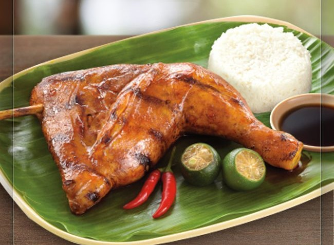

Chicken Inasal

Chicken Inasal is a grilled chicken dish and one of the well known Ilonggo dishes.
Grilled chicken thigh or breast/wing that has been marinated with Illonggo spices and basted with atsuete oil.
Ingredients
- 2 lbs chicken cut into serving pieces
- 2 tablespoons ginger minced
- 2 tablespoons garlic minced
- 3/4 cup lemongrass chopped
- 1 cup coconut vinegar
- 1/2 cup lemon or calamansi juice
- 1 tablespoon salt
- 1/4 cup brown sugar
- 1 cup lemon soda softdrink
- 1/2 tablespoon ground black pepper
Basting Sauce:
- 3 tablespoons annatto oil atsuete oil
- 1/2 cup margarine softened
- 1/4 teaspoon salt
- 1 teaspoon lemon or calamansi juice
Steps
- In a freezer bag or large bowl, combine chicken, lemongrass,
salt, ground black pepper, ginger, garlic, brown sugar, vinegar,
lemon-lime soda, and lemon juice.
- Stir or shake the mixture until every ingredient is well incorporated.
Marinade for 1 to 3 hours.
- In a bowl, combine margarine, annatto oil, salt, and lemon juice then stir. Set aside.
- Grill the chicken while basting generous amount of the margarine mixture.
- Transfer the grilled chicken to a serving plate.
- Serve with sinamak. Share and enjoy!
Return to index